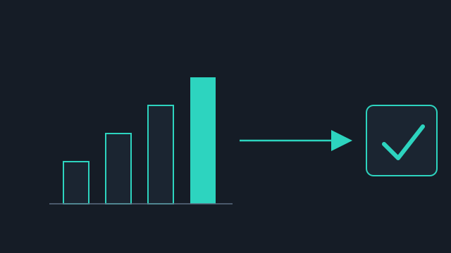
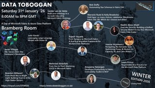
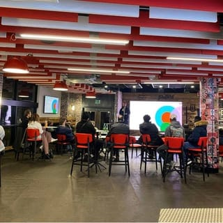
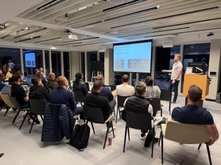
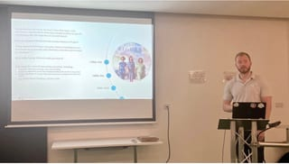
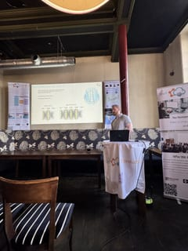
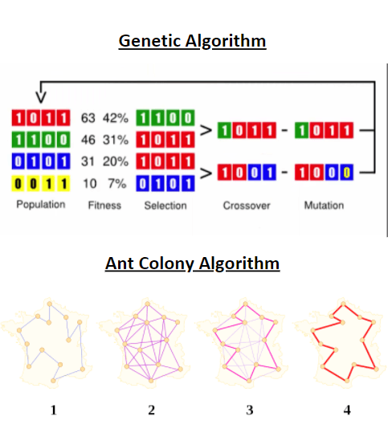

July 2026
Pursuing an MSc in AI While Leading Analyst Teams
Why I chose to study artificial intelligence alongside a senior analytics role — and what I've learned so far.
Read more →AI Orchestration Architect · MSc Artificial Intelligence
Designing and orchestrating multi-agent AI systems, advising organisations on AI and GenAI strategy, and building explainable deep learning solutions for regulated industries.

 Redgate Ambassador
Redgate Ambassador
Latest Posts
The most recent writing on analytics, AI, and continuous learning.
July 2026
Why I chose to study artificial intelligence alongside a senior analytics role — and what I've learned so far.
Read more →
July 2026
Building a model is only half the job. The other half is making sure the right people can act on what it tells them.
Read more →
March 2026
What AI governance actually is, its core principles, the challenges organisations face, and a practical framework for getting started.
Read more →About
I'm an AI Orchestration Architect with a 1st Class BSc (Hons) in Computer Science from Nottingham Trent University and an MSc in Artificial Intelligence (Merit) from the University of Bath.
At Intent HQ, I design and orchestrate multi-agent AI systems — the agents, workflows, and prompts that make AI-native operations work in production — while championing the organisational change needed to adopt them.
Before that, as Lead AI Consultant at Cloud Formations, I advised public and private sector organisations on AI and GenAI strategy, designed enterprise-scale AI architectures, and built explainable deep learning solutions for regulated environments. Earlier roles at Experian, the Post Office, and Capital One took me from data analysis through platform governance to enterprise architecture. I'm also a former national-level athlete who stays active through the gym and running.
Designing and orchestrating multi-agent AI systems in production.
Advising senior stakeholders on AI and GenAI adoption and enterprise architecture.
Explainable deep learning built to meet regulatory requirements.
Experience
Mar 2026 — Present
Intent HQ
Nov 2024 — Mar 2026
Cloud Formations Ltd
Nov 2023 — Nov 2024
Experian
Oct 2022 — Nov 2023
Experian
Jul 2021 — Oct 2022
Post Office — Horizon Improvement Team
Sept 2018 — Jun 2021
Capital One
Placement year
GKN Driveline
Education
Completed 2025
University of Bath
Completed 2018
Nottingham Trent University
Skills
Blog
Thoughts on analytics, AI, and continuous learning.
July 2026
Why I chose to study artificial intelligence alongside a senior analytics role — and what I've learned so far.
Read more →July 2026
Building a model is only half the job. The other half is making sure the right people can act on what it tells them.
Read more →Events
Talks, meetups, and podcast appearances on AI, GenAI, and deep learning.
Upcoming
October 2026 · Birmingham
Past
July 2026
April 2026 · SQLBits
March 2026
February 2026

January 2026

November 2025

October 2025

July 2025
July 2025

April 2025
Projects
Selected work from my BSc dissertation, MSc modules, and personal data projects.

Featured · MSc Dissertation
Investigated how explainability techniques can increase deep learning adoption in regulated sectors, using a 2.26 million row credit risk dataset and LIME/SHAP interpretability analysis.

BSc Dissertation
Investigated and compared Ant Colony Optimisation and Genetic Algorithms, then combined them into a novel hybrid approach for optimisation problems.

MSc · AI
Pure code implementation of the Enigma cipher — decoding messages and reverse-engineering machine settings from intercepted ciphertext.

Data Analysis
Explored which factors drive gross movie revenue, including feature engineering to convert categorical data for statistical comparison.

Automation
Scraped product data daily, stored results in CSV, and triggered automated email alerts when prices dropped below a threshold.

Machine Learning
Built a linear regression model to predict final grades from study time, past results, failures, and absences.
Contact
Open to conversations about analytics, AI, and leadership in data.